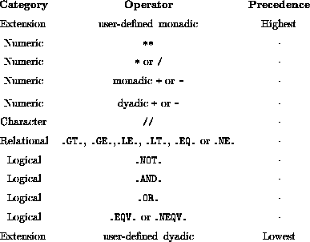

The following table depicts the order in which operators are evaluated:

In an expression with no parentheses, the highest precedence operator is combined with its operands first; In contexts of equal precedence left to right evaluation is performed except for **.
Other relevant points are that the intrinsically defined order cannot be changed which means that user defined operators have a fixed precedence (at the top and bottom of the table) and never be changed. The operator with the highest precedence has the tightest binding; from the table user-defined monadic operators can be seen to be the most tightly binding.
The ordering of the operators is fairly intuitive and is comparable to the ordering of other languages. The evaluation order can be altered by using parenthesis; expressions in parenthesis is evaluated first. In contexts of equal precedence left to right evaluation is performed except for ** where its is right to left. This is important when teetering around the limits of the machines representation. Consider A-B+C and A+C-B, if A were the largest representable number and C is positive and smaller than B; the first expression is OK but the second will crash the program with an overflow error.
One of the most common pitfalls occurs with the division operator -- it is good practice to put numerator and denominator in parentheses. Note:
(A+B)/Cis not the same as
A+B/C
but
(A*B)/Cis equivalent to
A*B/C
This is because the multiplication operator is more tightly binding than the addition operator, however,
A/B*Cis not equivalent to
A/(B*C)
due to left to right evaluation.
The syntax is such that two operators cannot be adjacent; one times minus one is written 1*(-1) and not 1*-1. (This is the same as most languages.)